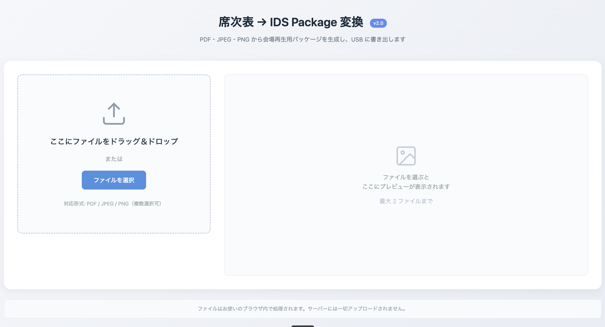
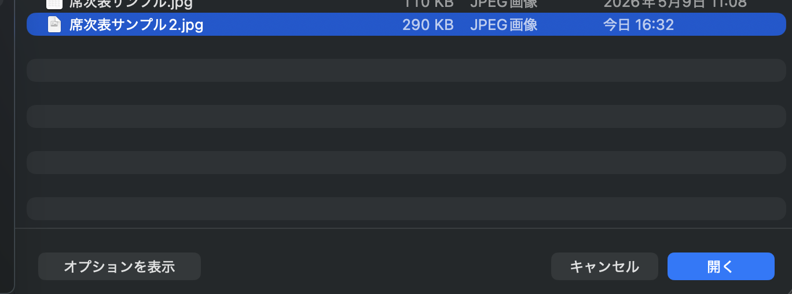
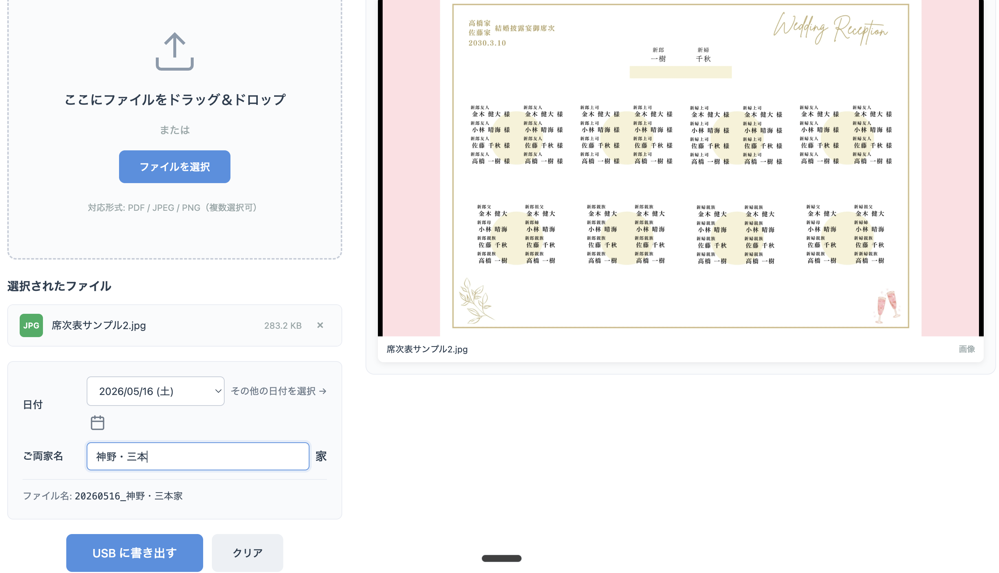
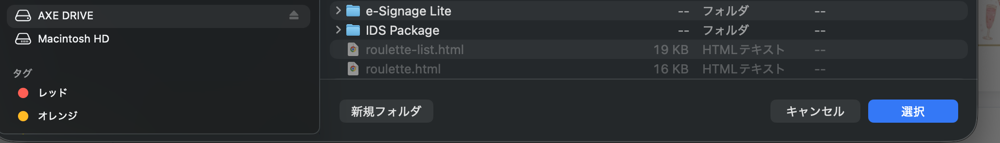
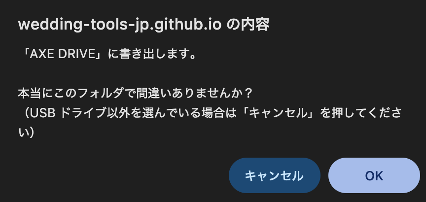
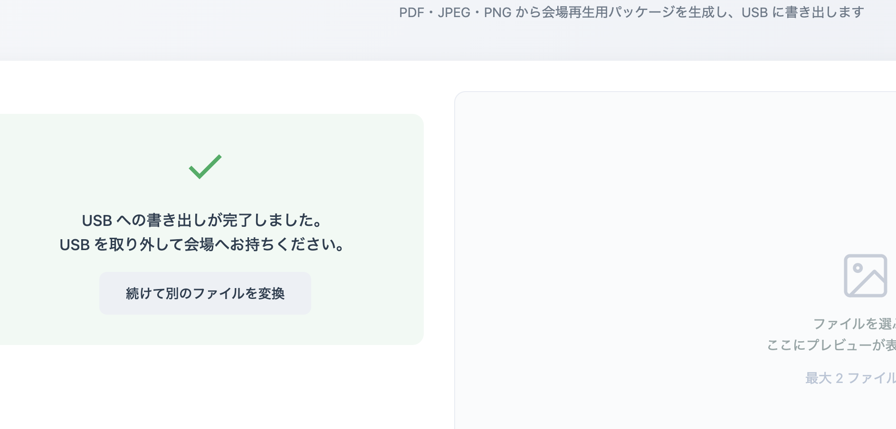

席次表の PDF や画像から、会場の再生機器（Panasonic PW-DPC01）で使えるパッケージを作って、USB に直接書き出すツールです。
席次表のファイルを左側のエリアにドラッグ＆ドロップするか、「ファイルを選択」ボタンから選びます。
対応形式: PDF / JPEG / PNG


ファイルを選ぶと、入力欄が表示されます。
神野・三本）。「家」は自動で末尾に付きます。右側のプレビューは、会場のモニターでの見え方そのものです。左右に黒い余白が入った 16:9 の状態で表示されます。

パソコンに USB メモリを挿してから、青い「USB に書き出す」ボタンを押します。
フォルダ選択画面が出るので、挿した USB メモリ（例: AXE DRIVE）を選んで「選択」をクリックします。

ブラウザが「『〇〇』に書き出します。本当にこのフォルダで間違いありませんか？」と確認してきます。
USB の名前が表示されているのを確認して、「OK」を押してください。

緑のチェックマークと「USB への書き出しが完了しました。」の表示が出たら成功です。
パソコンから USB を取り外し、会場の再生機器（PW-DPC01）に挿してご使用ください。

USB のフォーマットが FAT32（MS-DOS）になっているか確認してください。exFAT や NTFS だと会場の機器（PW-DPC01）が認識できません。フォーマットし直すと中のデータは全部消えるので注意してください。
Safari や Firefox では USB に直接書き出せません。Google Chrome か Microsoft Edge でお試しください。
大きな PDF やページ数の多い PDF は時間がかかります。途中でタブやブラウザを閉じないでください。1 ファイル 50 ページが上限です。
v2.0 では左右が黒の余白になるように修正されています。もし白い場合は、ブラウザを Cmd + Shift + R（Windows は Ctrl + F5）で強制再読み込みして、画面上部に v2.0 のバッジが表示されているか確認してください。
ページを Cmd + Shift + R（Windows は Ctrl + F5）で再読み込みしてみてください。それでも改善しない場合は管理者までご連絡ください。